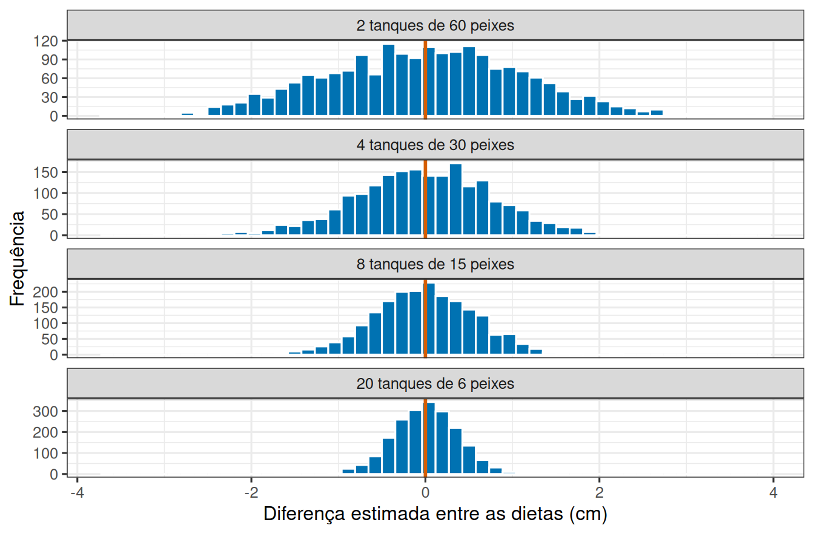

Como montar um experimento que responde à pergunta?
Leitura prévia
1 Cento e vinte peixes para distribuir
Uma pesquisadora vai comparar duas dietas para juvenis de robalo. O orçamento dá para 120 peixes e para o espaço, a mão de obra e a ração que eles exigem. Esse número está fechado.
O que ainda não está fechado é como distribuí-los. Dois tanques de 60 peixes? Quatro de 30? Vinte de 6? Todas as opções gastam o mesmo, ocupam a mesma sala e produzem 120 medidas de comprimento.
Elas não produzem, porém, a mesma capacidade de responder à pergunta. Esta leitura trata das três decisões que definem isso, todas tomadas antes de o primeiro peixe entrar na água.
2 Primeira decisão: quantas unidades experimentais?
Peixes do mesmo tanque compartilham as condições daquele tanque, e a dieta é atribuída ao tanque, não ao peixe. Quem se replica, portanto, é o tanque.
Vale ver o que isso significa em números. A figura abaixo repete duas mil vezes um experimento em que as duas dietas são idênticas, variando apenas a distribuição dos 120 peixes, e guarda a diferença estimada entre as dietas em cada repetição.
Com 2 tanques de 60 peixes, as diferenças estimadas nesta simulação se espalharam com desvio-padrão de 1,14 cm, apesar de a dieta não fazer nada. Com 20 tanques de 6 peixes, o mesmo orçamento produziu estimativas com desvio-padrão de 0,36 cm.
Isso não significa que subamostras sejam inúteis. Medir vários peixes por tanque produz uma média confiável daquele tanque, e isso melhora a estimativa. Só que o ganho satura rápido, enquanto cada tanque novo acrescenta uma repetição independente do tratamento.
3 Segunda decisão: quem recebe qual tratamento?
Definidos os tanques, resta atribuir as dietas. E essa atribuição precisa ser sorteada.
Sortear não é uma formalidade burocrática. É o que impede que diferenças pré-existentes se alinhem com o tratamento. Se a pesquisadora escolher “os tanques mais claros para a dieta nova”, luz e dieta ficam confundidas para sempre, e nenhuma análise posterior separa as duas.
O sorteio também cobre o que ninguém pensou em medir: a posição na sala, a idade da bomba de aeração, a ordem em que os peixes foram capturados. Não elimina essas diferenças, mas as espalha entre os tratamentos, em vez de deixá-las acumular de um lado.
4 Terceira decisão: o que manter constante?
A última decisão é sobre tudo aquilo que não é o tratamento.
Manter constante o que puder ser mantido constante (temperatura, fotoperíodo, densidade inicial, horário de alimentação, origem dos juvenis) é o que se chama de controle local. Cada uma dessas fontes de variação que você elimina sai da variação residual, e a variação residual é a régua com a qual o efeito do tratamento é julgado.
O efeito da dieta não muda com isso. O que muda é a nitidez com que ele aparece.
5 Nem tudo pode ser sorteado
Uma ressalva que acompanha boa parte das Ciências do Mar.
Em muitos estudos o “tratamento” é uma condição observada, não atribuída: costões expostos e abrigados, meses de coleta, estuários poluídos e limpos. Ninguém sorteia qual costão será exposto.
Nesses casos ainda vale escolher bem as unidades, replicá-las e controlar o que der para controlar. O que não vale é ler o resultado como se o sorteio tivesse acontecido: sem aleatorização, a conclusão é sobre associação, não sobre causa.